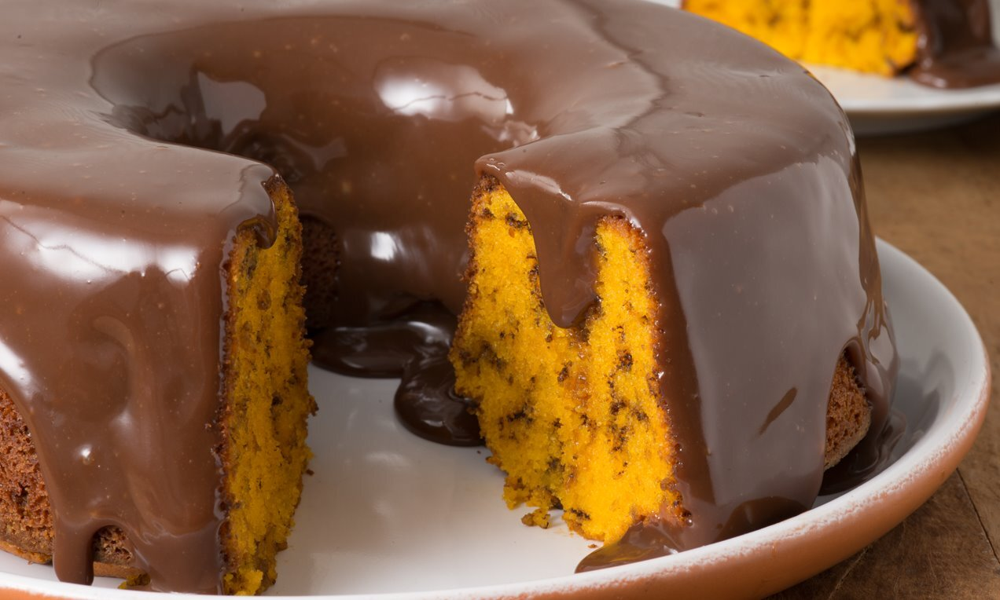

BOLO DE CENOURA FORMIGUEIRO

1/2 xícara (chá) de óleo
3 cenouras médias raladas
4 ovos
2 xícaras (chá) de açúcar
2 e 1/2 xícaras (chá) de farinha de trigo
1 colher (sopa) de fermento em pó
1 colher (sopa) de manteiga
3 colheres (sopa) de chocolate em pó
1 xícara (chá) de açúcar
1 xícara (chá) de leite
Modo de preparo
Massa
- No liquidificador, bata os ovos, o óleo, o açúcar e as cenouras.
- Passe para uma tigela e acrescente a farinha, o fermento e o granulado. Misture até obter uma massa homogênea.
- Coloque em forma de cone (24 cm de diâmetro) untada e enfarinhada e asse em forno médio, pré-aquecido a 180ºC,
por cerca de 35 minutos ou até que esteja levemente dourado.
- Retire do forno, espere esfriar e desenforme.
- Espalhe a cobertura e sirva na sequência.
Cobertura
Em uma panela pequena, adicione o creme de leite e leve ao fogo baixo. Antes de levantar fervura, adicione
a cobertura sabor Chocolate ao leite Dr. Oetker picada e misture bem até criar um creme homogêneo. Reserve.
Fonte: Bolo de Cenoura Formigueiro
VOLTAR AO TOPO.
VOLTAR AO INICIO.